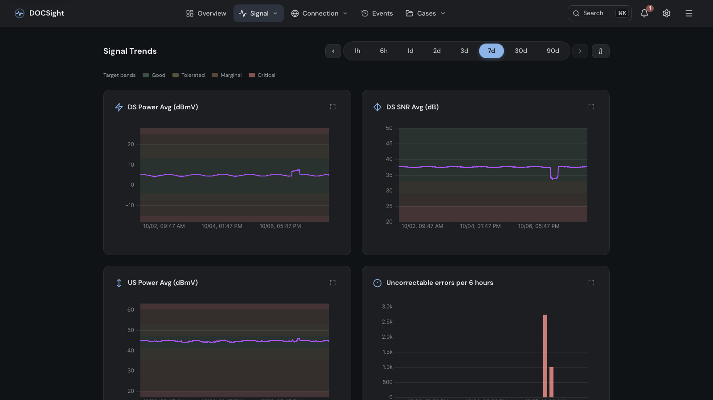
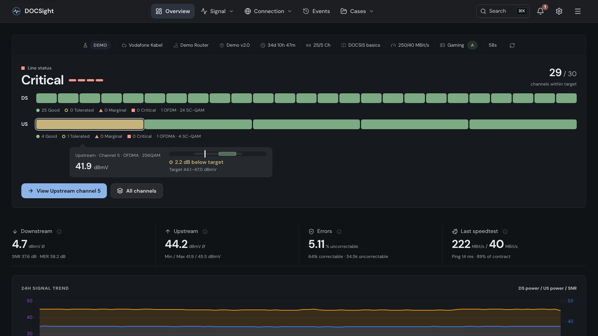
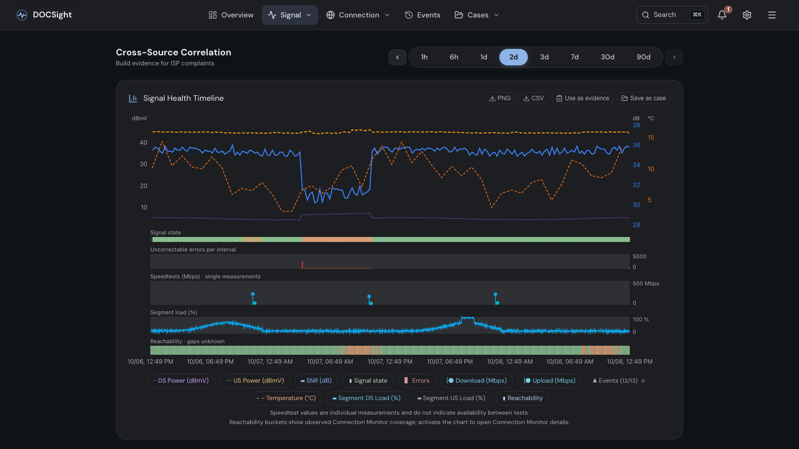
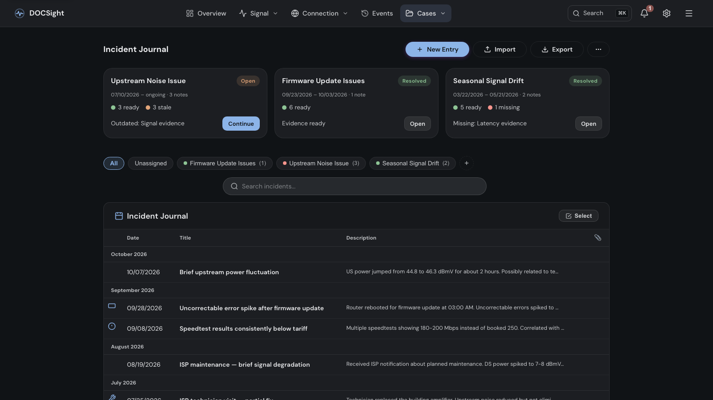
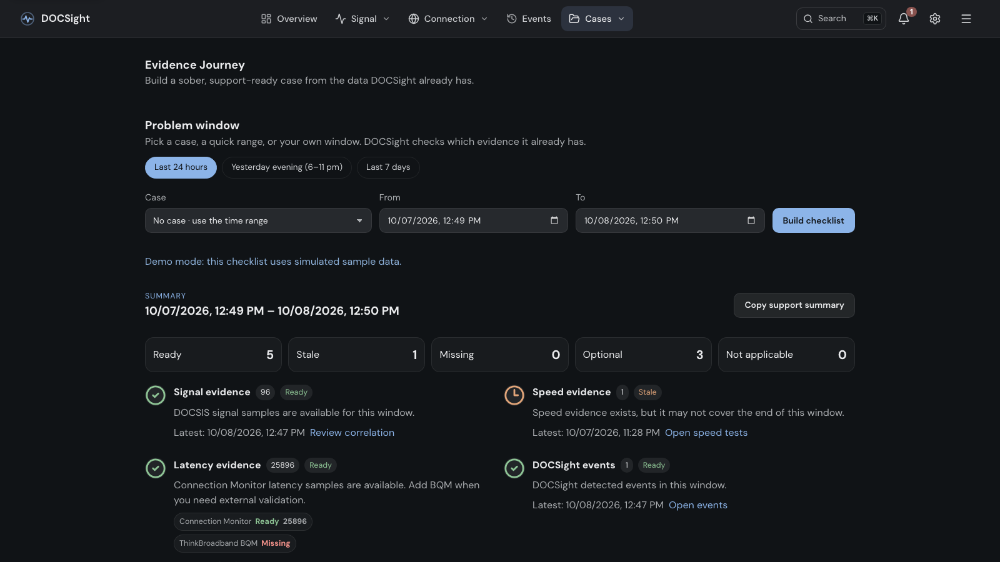
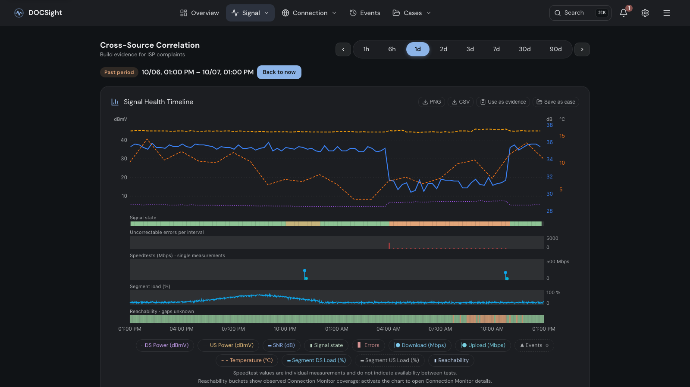

1
Find the pattern
Signal history with target bands for power and SNR, and uncorrectable errors per interval. Step back in time, or click a point to open the full snapshot.
Signal Trends →
Self-hosted · Open source
DOCSight keeps DOCSIS signal history, speed tests, latency, events and notes together on your own hardware, so you can find out what is wrong with your connection and prove it to your provider.
MIT licensed · Runs in Docker · No modem needed for the demo

The real interface with synthetic demo data.
Detect, understand, prove
A speed test shows the symptom and a modem page shows one moment. DOCSight records all of it around the clock and keeps the timeline.
Signal history with target bands for power and SNR, and uncorrectable errors per interval. Step back in time, or click a point to open the full snapshot.
Signal Trends →
Signal, errors, speed tests, segment load and reachability on one timeline, so you can see whether a speed dip lines up with the line itself.
Correlation →
Cases gather events, notes and snapshots, and show which evidence is ready and which is still missing.
Incident Journal →
The Evidence Journey checks a time window and builds the report, the complaint letter and the PDF.
Evidence Journey →

Proof pack
A bad day with synthetic data, and the complaint report DOCSight builds from it. No real provider, address or customer data.
Features
Each feature has its own page in the Wiki.
For Germany: BNetzA measurements and TKG compensation.
24 languages, and installable as an app.
DOCSight has drivers for 22 modem families, among them AVM FRITZ!Box Cable, Vodafone Station (CGA4233, TG3442DE), Sercomm Ultra Hub 7, Connect Box (CH7465), Sagemcom F@st 3896 and F3896LG, PYUR FAST3896-15 (experimental), Technicolor TC4400, Arris SURFboard, Hitron CODA and Netgear CM1000/CM3000.
Not on cable? Generic Router mode works with fiber, DSL and satellite: speed tests, latency monitoring, notes and reports, without DOCSIS signal data.
Local first
History and reports stay on your own hardware. Modem data, logs, credentials and tokens are never uploaded automatically, and optional integrations only talk to the services you configure.
Reports and exports are built locally. Review them before you share them: they can contain connection details and notes.
Is it for you?
Get started
Realistic history with synthetic data, no modem required.
docker run -d --name docsight-demo \ -p 8765:8765 -e DEMO_MODE=true \ ghcr.io/itsdnns/docsight:stable
Configuration and history stay in the docsight_data volume.
docker run -d --name docsight \ --restart unless-stopped \ -p 8765:8765 \ -v docsight_data:/data \ ghcr.io/itsdnns/docsight:stable
Then open port 8765 on that machine in your browser. The setup asks for your connection type, finds the modem on request and tests the connection.
The Windows Desktop Preview is an unsigned portable build for short local tests. For continuous monitoring, run Docker on an always-on machine.